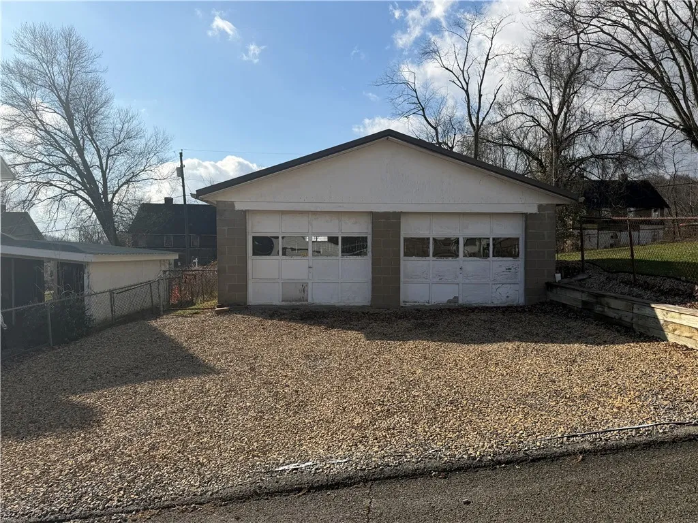

PIT · FAYETTE COUNTY, PENNSYLVANIA
Main St, Dunbar / Juniata
$20,000 цена продажи · MLS 1733004
Отдельный гараж 1970 года на участке 0.248 ac (около 1,004 м²). По фото уже есть гравийный подъезд; продавец заявляет металлическую крышу и возможность использовать помещение для хранения или как мастерскую.
- Наличие
- Active в открытой карточке Trulia 23 ноября.
- Высокий RV внутри
- Не подтверждено. На фото обычные низкие ворота. Высота, ширина и внутренняя длина неизвестны; изменение ворот не входит в запрос.
- Снаружи
- Существующая площадка видна. Её полезные размеры, уклон, границы и законность хранения RV не установлены.
- Местоположение / дорога
- Точка портала около Juniata. До неё Google Maps показал 120 км / 1 ч 17 мин с платными участками. Это не подтверждённый маршрут до въезда: продавец даёт GPS-ориентир 417 Main St, который Google Maps не нашёл.
- Ремонт и подключения
- Право личного ремонта, электричество, вода и канализация неизвестны. Слова продавца «workshop» разрешением не считаются.
Фото именно этого объявления: SWC Realty / West Penn MLS через Trulia; сохранены исходные байты. Точную привязку участка ещё требуется подтвердить.